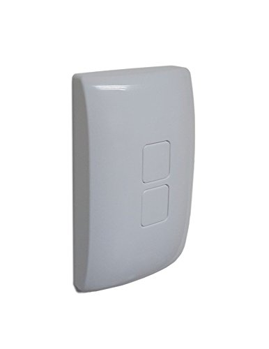

Z-Wave Smart Switch Cover, WA00Z-1, by GoControl, Cert ID: ZC10-15100009¶

Brief information¶
- Smart Switch Cover with Z-Wave radio. The WA00Z-1 can control the Z-Wave Smart LED Bulb as well as other Z-Wave light control devices
- Z-Wave Certification ID: ZC10-15100009
- Frequency Region: U.S./Canada/Mexico, Z-Wave Library Version: 6.51.06
- Device Categories: Lighting Accessory Switches
- Supported Command Classes: AGI,Battery,Wake Up,Powerlevel,Central Scene,Configuration,Firmware Update,Association
How to add to VENUS app¶
- 1. Activation
- Press “Add button” (button ‘+’) in app
- Press either button on device
- Green LED flashes twice
- Wait for VENUS scan & detect this device and inform in app
- 2. Reset then re-add
- Press “Add button” (button ‘+’) in app
- Press either button on device (to reset)
- Green LED flashes twice
- Press either button on device (to add)
- Green LED flashes twice
- Wait for VENUS scan & detect this device and inform in app
How to add/remove associated device(s) to¶
This devive can support 2 association group with up to 5 target nodes.
To add associated device(s) to this sensor, below action is required:
- Add z-wave notified-devices (which will be associated to this sensor) to VENUS
- Select Associate button and then select notified-device(s) to add
- If successful, pop-up notification displays in VENUS app and LED will flash twice
To remove associated device(s) from this sensor, below action is required:
- Select Associate button and then select notified-device(s) to remove
- If successful, pop-up notification displays in VENUS app and LED will flash twice
Configuration description¶
- Activation of central scene
T.B.D
# Control mode
Available 0: can activate the Scene which is pre-set by Gateway, and then control the associated Smart Bulbs in either Group 2 or Group 3 1: can only activate the Scene which is preset by the Gateway 2: can only control Smart Bulbs in Association Group 2 and Group 3 Default 0
- # Invert switch
Change setting in top/bottom switch button role
Available 0: Top switch button is ON button, bottom switch button is OFF button 1: Top switch button is OFF button, bottom switch button is ON button Default 0 - # Invert switch
Change setting in top/bottom switch button role
Available 0: Top switch button is ON button, bottom switch button is OFF button 1: Top switch button is OFF button, bottom switch button is ON button Default 0
Factory reset¶
- Press top switch button 5 times and press bottom switch button 5 times within 5 seconds (to reset)
- The LED will flash seven times to indicate that a Reset is taking place